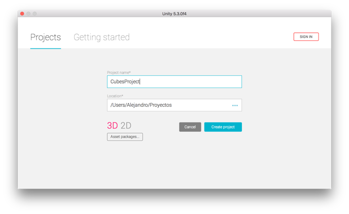
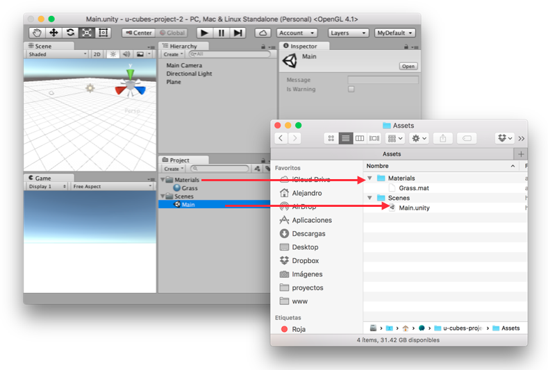
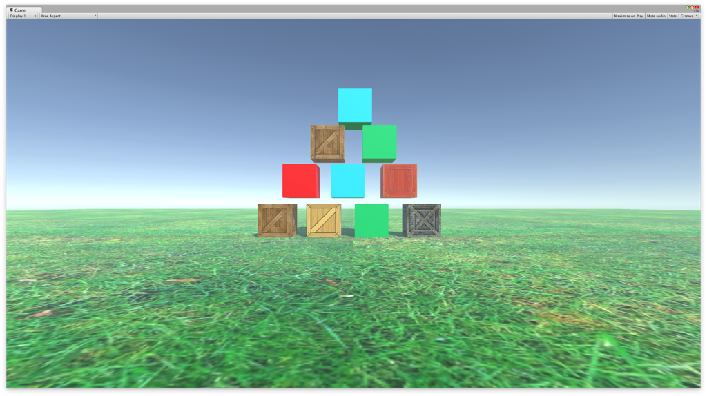
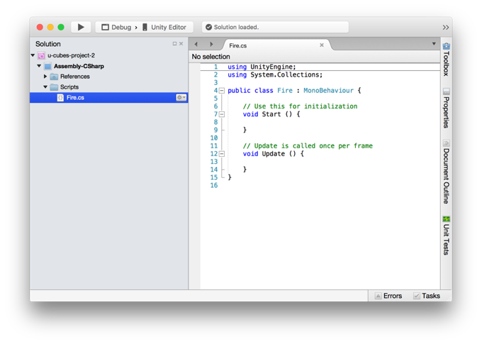

1. Crea un nuevo proyecto en Unity con el nombre de CubesProject.
File > New Project

2. Coloca un plano en la escena.
GameObject > 3D Object > Plane
3. Aumenta el tamaño del plano para que su escala sea: (10, 1, 10). Esto lo puedes hacer de dos maneras distintas:
Opción 1: Modificación del componente.
Opción 2: Escalar el objeto.
4. En la ventana Project, crea un folder que se llame Materials, dentro de la carpeta crea un nuevo material que se llame Grass.
5. Guarda la escena en una carpeta llamada Scenes, guarda la escena con el nombre de Main.
6. Cada que modificas la jerarquía de la ventana Project esta modificación se ve reflejada en la jerarquía de archivos del sistema.

7. Busca en Internet una textura de pasto o prueba con la siguiente textura: http://bit.ly/textura-pasto.
8. Almacena la textura en una carpeta dentro de Materials que se llame Textures.
9. Al seleccionarla en Unity, el Inspector te debería de mostrar la información asociada a la textura.
10. Selecciona el material Grass. Con el material mostrándose en el Inspector, arrastra la textura al cuadro en blanco en el atributo Albedo.
11. Selecciona el objeto Plane en la ventana Hierarchy, en el componente Mesh Renderer, abre la jerarquía de Materials y en Element 0, arrastra el material Grass.
12. Selecciona el material Grass, posteriormente en los atributos de Main Maps, modifica los valores de Tiling para que sean (10, 10).
13. Coloca un par de cubos dentro de la escena de la siguiente manera, así mismo a cada cubo asígnale un material y una textura.

14. Selecciona todos los cubos y agrégales el componente Rigidbody.
15. Presiona Play y observa que sucede en la escena.
15. Presiona Play y observa que sucede en la escena.
1. Crea una carpeta que se llame Scripts.
2. Dentro de la carpeta crea un script que se llame Fire (a los scripts también se les conoce como componentes) y que sea del tipo C#.
3. Agrega el componente Fire (el que acabas de crear) a la cámara principal (Main Camera) de la escena.
4. Abre el componente Fire, esto se hace con doble click sobre el componente Fire en la ventana de Project.
5. Este script se abrirá en MonoDevelop, si no lo puedes abrir en MonoDevelop se puede abrir con cualquier editor de textos.

6. Dentro del método Update ( ) debes de tener el siguiente código:
7. Guarda el script.
8. Ejecuta el juego presionando el botón de Play.
Si colocas el mouse sobre la ventana de juego y presionas el botón izquierdo del mouse, se deberían de disparar unas pelotas.
1. Crea una nueva escena.
2. Crea un plano, gira el plano y coloca un cubo arriba del plano.
3. Agrega al cubo el componente de Rigidbody.
4. Crea un material de física Project > Create > Physics Material.
5. Selecciona el cubo y arrastra el Physics Material al Box Collider del cubo en su propiedad Material.
6. Cambia el Bounciness del material a 1 (Ejecuta la escena).
7. Cambia la posición en Y del cubo (Ejecuta la escena).
8. Cambia la masa del cubo (Ejecuta la escena).
9. Cambia el parámetro Bounce combine a Maximum y verás que el rebote es mayor. ¿Cómo funciona el Bounce combine?
10. Ahora coloca todas las variables del material de física 0 y el Friction combine en Minimum (Ejecuta la escena).
Byl, P. (2012). Holistic game development with Unity an all-in-one guide to implementing game mechanics, art, design, and programming. Waltham, MA: Focal Press.